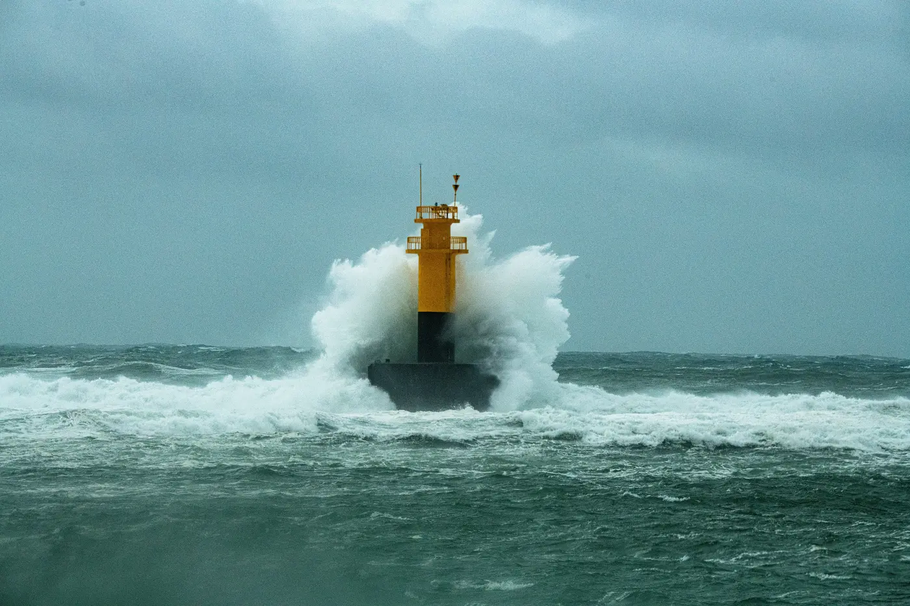
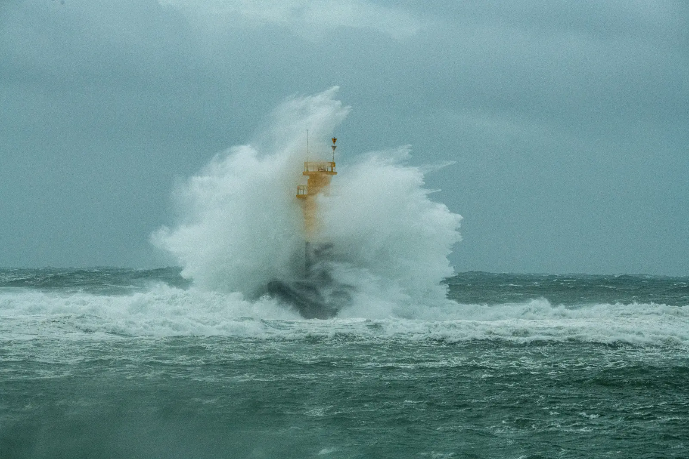
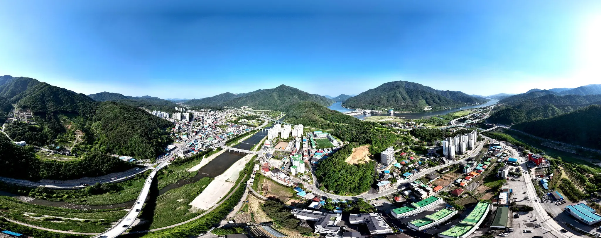
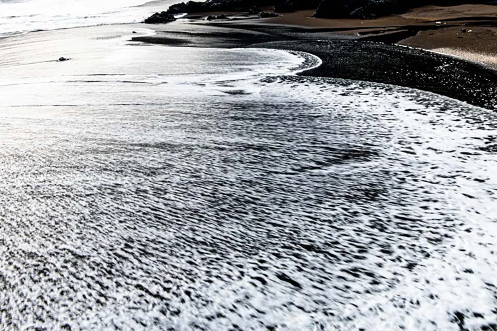

2019
바람이 지우고,
바다가 그리다
태풍 링링이 지난 제주 남원. 바람과 파도는 오래 반복된 움직임으로 풍경을 지우고, 다시 한 폭의 수채화를 그려냅니다.

“이 작업은 기록이 아니라 대화다.”
옛사람과 강, 그리고 오늘의 나 사이에서01
흐르는 것과 머무는 것, 사라지는 것과 이어지는 것을 바라본 연작입니다.

2019
태풍 링링이 지난 제주 남원. 바람과 파도는 오래 반복된 움직임으로 풍경을 지우고, 다시 한 폭의 수채화를 그려냅니다.
2026
북한강의 옛 지명과 현재 풍경, 그 곁에서 살아온 사람들의 시간을 따라가는 사진적 대화.
ongoing
강물은 세월을 싣고 흐르지만, 기억 속 고향의 길은 다시 사람에게로 이어집니다.


02
공학의 질서, 합창의 조화,
사진의 기다림은 한 방향으로 이어집니다.
전호경은 전자공학을 연구하고 오랜 시간 해양과 극지의 현장을 걸어왔다. 남극의 수평선과 바다의 깊이를 관찰한 경험은 자연과 인간, 기술과 기억을 바라보는 사진의 태도로 이어졌다.
한국남성합창단과 함께 쌓아온 음악의 시간, 그리고 사진예술에 대한 탐구를 바탕으로 사라져가는 풍경과 그 안에 남은 삶의 흔적을 기록한다.
03
시간은 흘러가도, 풍경은 머물고
사람은 떠나가도, 정신은 이어진다.